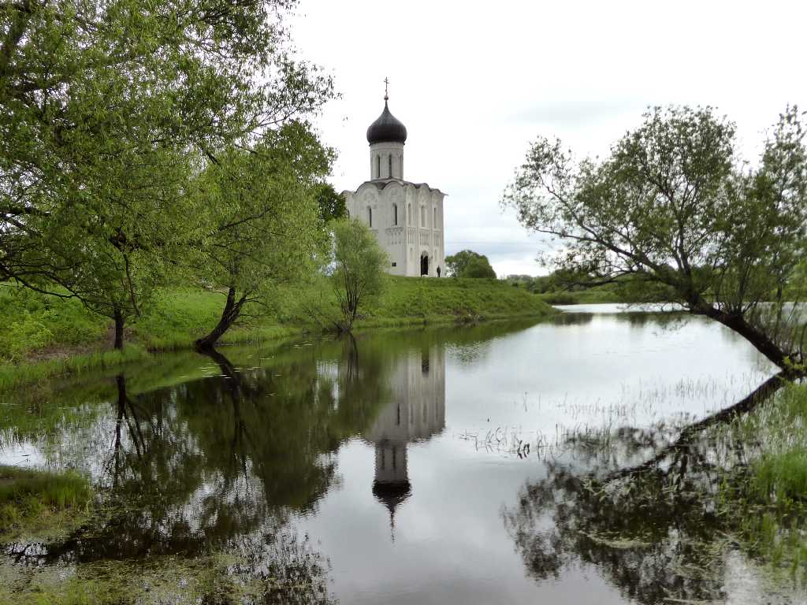
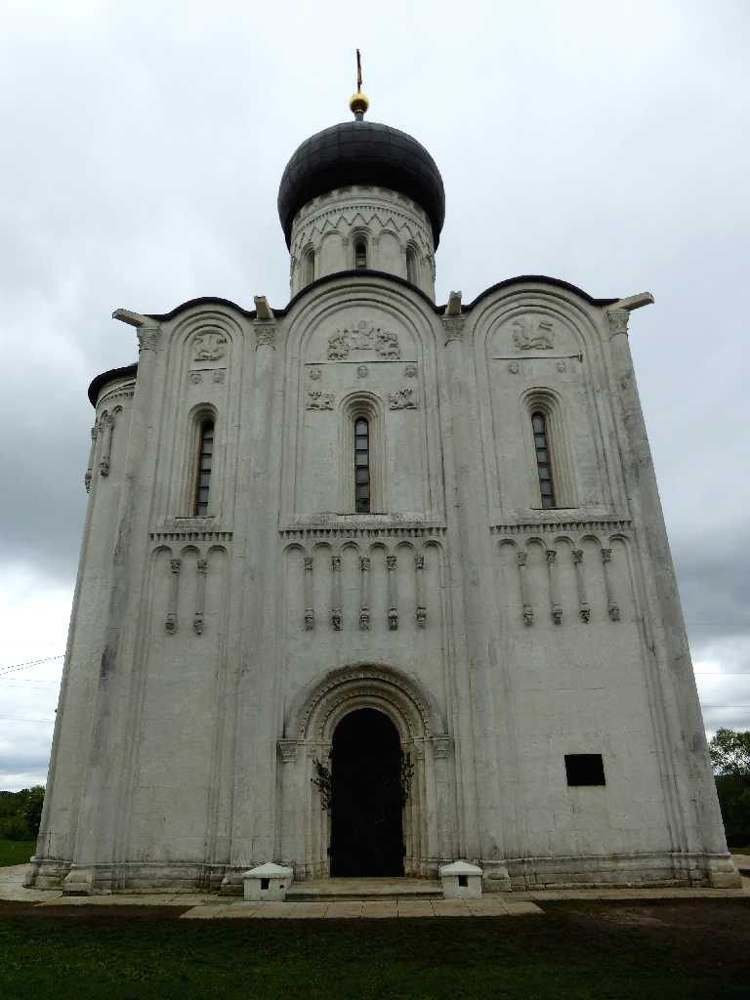
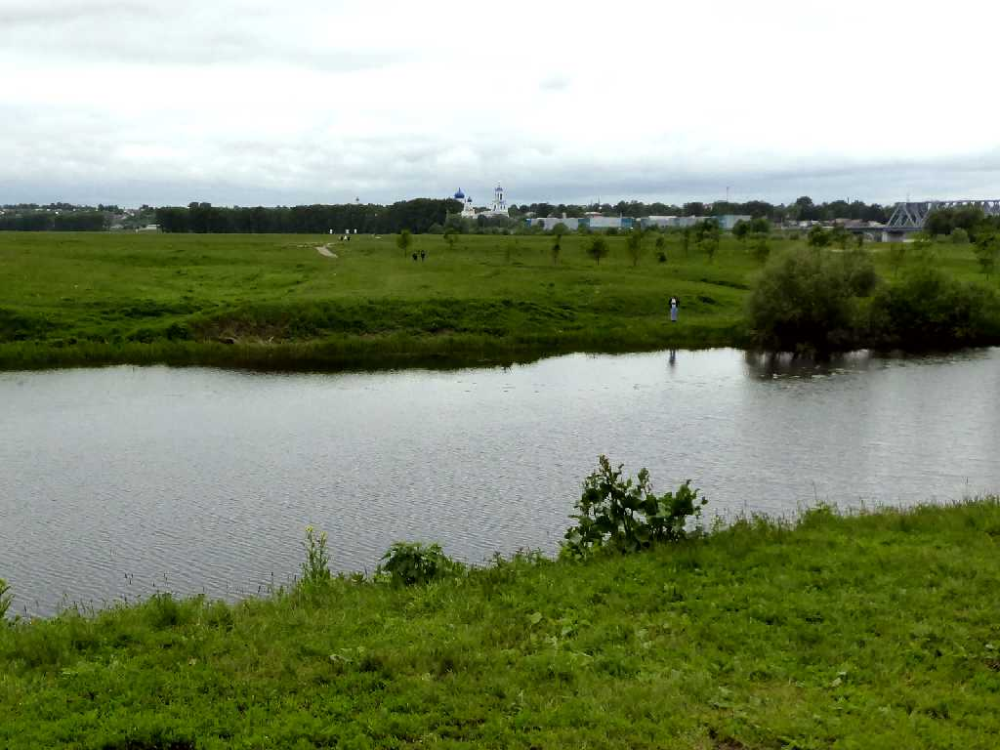
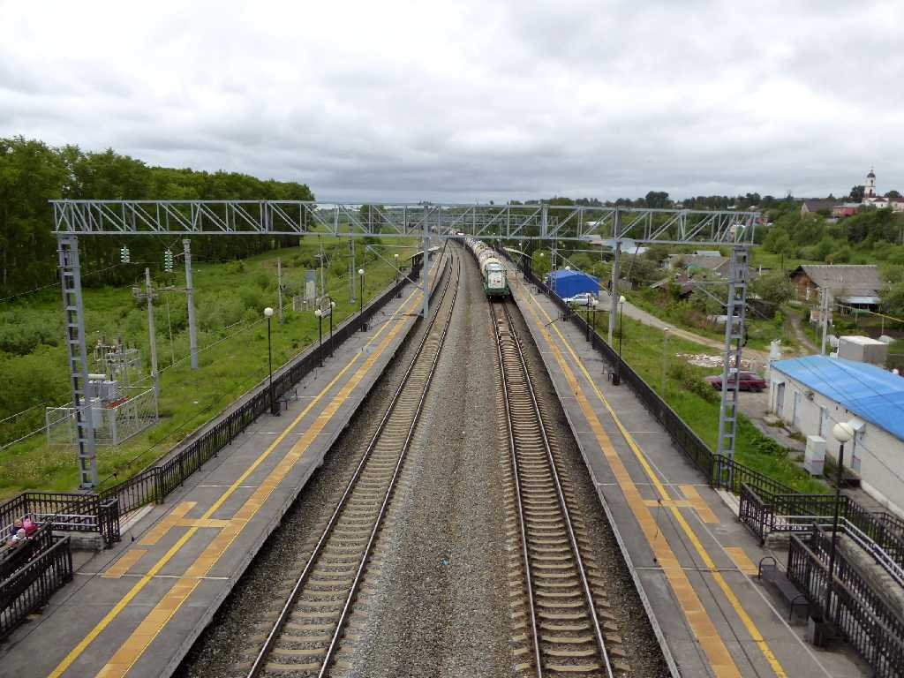
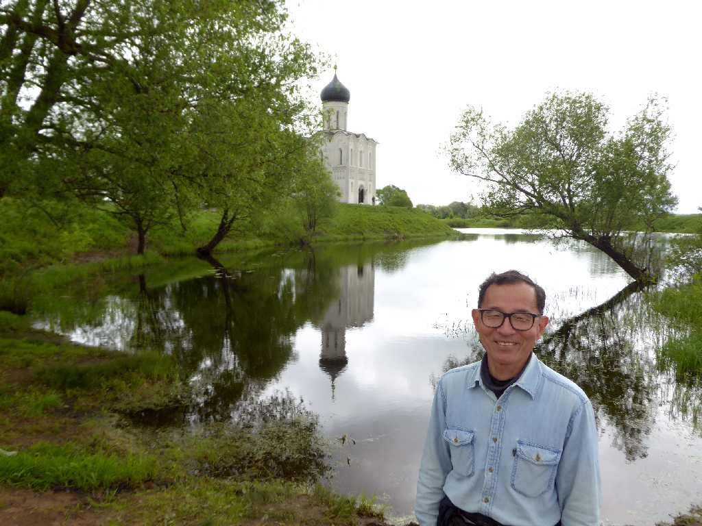

Tserkov Pokrova na Nerli Bogolubovo
ボコリュブスキーの息子が殺害されたため１１６５年にヴォルガ川の支流のネルリ川の畔に創られた生神女庇護聖堂

Tserkov Pokrova na Nerli
１２世紀の彫刻に覆われた記念碑的聖堂で中世ロシアの象徴と云われている

Svyato-Bogolyubsky Monastery Bogolubovo
ボゴリュボヴォ女子修道院とつながっており修道院に訪れる人々を記念碑的聖堂が迎え入れてきた

Bogolubovo Station Trans Siberian Railway
８０日間世界一周鉄道の旅で４年前にロシア１号で通過したボゴリュボヴォ駅

June 6 2017 Bogolubovo